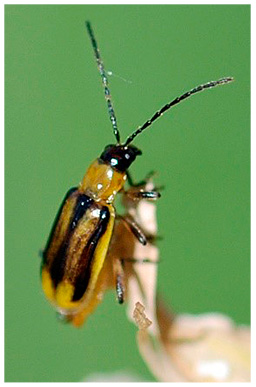

Research
Assembling the cornrootworm transcriptome
The western corn rootworm (Diabrotica virgifera virgifera) and related species, the southern (D. undecimpunctata) and northern (D. barberi) corn rootworms are agricultural pests of crops, mainly corn as their names suggests. Most damage to the host plant is caused by larval feeding.  My work involves assembling the transcriptomes of these three species and analyzing the genes that may be involved in larval feeding or host location. An example of these genes are the CO2 receptors since western corn rootworm larvae are attracted to CO21 and may use CO2 for location of corn roots.
Predicting the structure of insect CO2 receptors
Insect chemoreceptors, consisting of mainly odorant and gustatory receptors, represent an unusual family of chemoreceptors that share no homology with mammalian chemoreceptors2. Due to several reaons, including difficulties with X-ray crystallography in solving membrane proteins and a lack of known homologous protein structures, the tertiary structures of insect chemoreceptors has long been unknown. Sequence coevoution analyses may be used to identify contacting residues in a folded protein and, thus, may help improve ab initio folding. This method has been used to predict the structure of the odorant receptor co-receptor (Orco), a highly conserved protein ubiquitously alongside odorant-binding receptors, with surprising accuracy3,4,5. Therefore, this method may also be useful for the CO2 receptors, another highly conserved set of genes among insects6.
Characterizing the gut and oral microbiomes of long-tailed macaques
My undergraduate research in the lab of Dr. Hope Hollocher focused on studying the gut and oral microbiomes of long-tailed macaques, monkeys that live closely alongside humans in southeast Asia.
- Bernklau EJ, Bjostad LB. Reinvestigation of host location by western corn rootworm larvae (Coleoptera: Chrysomelidae): CO2 is the only volatile attractant. Journal of Economic Entomology. 1998 Dec 1;91(6):1331-40.
- Silbering AF, Benton R. Ionotropic and metabotropic mechanisms in chemoreception:'chance or design'?. EMBO reports. 2010 Mar;11(3):173-9.
- Hopf TA, Morinaga S, Ihara S, Touhara K, Marks DS, Benton R. Amino acid coevolution reveals three-dimensional structure and functional domains of insect odorant receptors. Nature communications. 2015 Jan 13;6(1):1-7.
- Larsson MC, Domingos AI, Jones WD, Chiappe ME, Amrein H, Vosshall LB. Or83b encodes a broadly expressed odorant receptor essential for Drosophila olfaction. Neuron. 2004 Sep 2;43(5):703-14.
- Butterwick JA, del Mármol J, Kim KH, Kahlson MA, Rogow JA, Walz T, Ruta V. Cryo-EM structure of the insect olfactory receptor Orco. Nature. 2018 Aug;560(7719):447-52.
- Robertson HM, Kent LB. Evolution of the gene lineage encoding the carbon dioxide receptor in insects. Journal of Insect Science. 2009 Jan 1;9(1).